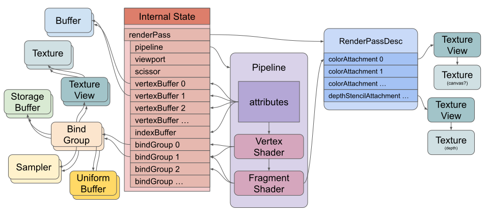
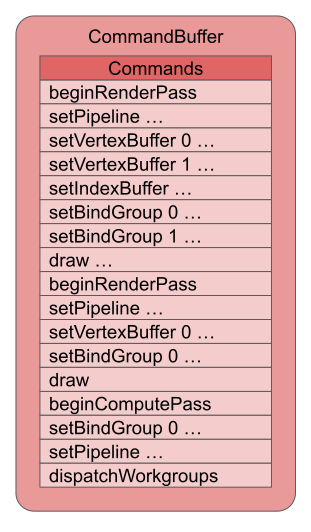
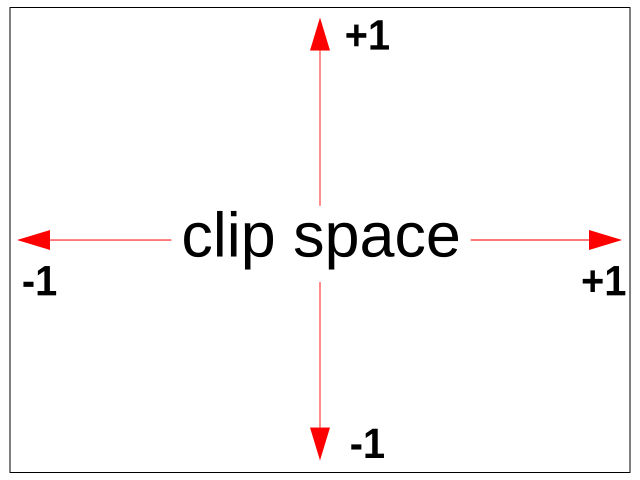
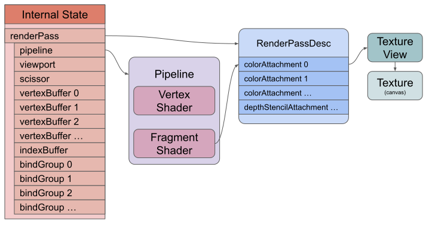
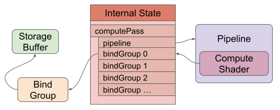

Este artículo intentará enseñarte los fundamentos básicos de WebGPU.
WebGPU es una API que te permite hacer 2 cosas básicas:
¡Eso es todo!
Todo lo demás sobre WebGPU depende de ti. Es como aprender un lenguaje de programación como JavaScript, Rust o C++. Primero aprendes lo básico y luego depende de ti usar creativamente esos fundamentos para resolver tu problema.
WebGPU es una API de nivel extremadamente bajo. Aunque puedes hacer algunos ejemplos pequeños, para muchas aplicaciones probablemente requerirá una gran cantidad de código y una organización de datos seria. Como ejemplo, three.js, que soporta WebGPU, consiste en ~550k bytes de JavaScript minificado, y eso es solo su biblioteca base. No incluye cargadores, controles, post-procesamiento y muchas otras características. De manera similar, está TensorFlow, cuyo núcleo (core) más el backend de WebGPU son ~600k bytes de JavaScript minificado y tampoco incluye soporte para todas las diversas características opcionales de TensorFlow.
El punto es que, si solo quieres mostrar algo en pantalla, es mucho mejor elegir una biblioteca que proporcione la gran cantidad de código que tendrías que escribir tú mismo al hacerlo desde cero.
Por otro lado, tal vez tengas un caso de uso personalizado, quieras modificar una biblioteca existente o simplemente tengas curiosidad por saber cómo funciona todo. En esos casos, ¡sigue leyendo!
Es difícil decidir por dónde empezar. A cierto nivel, WebGPU es un sistema muy simple. Todo lo que hace es ejecutar 3 tipos de funciones en la GPU: vertex shaders (sombreadores de vértices), fragment shaders (sombreadores de fragmentos) y compute shaders (shaders de cómputo).
Un vertex shader calcula vértices. El shader devuelve posiciones de vértices. Por cada grupo de 3 vértices que la función del vertex shader devuelve, se dibuja un triángulo entre esas 3 posiciones.[1]
Un fragment shader calcula colores.[2] Cuando se dibuja un triángulo, para cada píxel que se va a dibujar, la GPU llama a tu fragment shader. El fragment shader devuelve entonces un color.
Un compute shader es más genérico. Es efectivamente solo una función que llamas y dices “ejecuta esta función N veces”. La GPU pasa el número de iteración cada vez que llama a tu función, de modo que puedes usar ese número para hacer algo único en cada iteración.
Si entrecierras los ojos, puedes pensar en estas funciones como algo similar a las funciones que pasas a array.forEach o array.map. Las funciones que ejecutas en la GPU son solo funciones, al igual que las funciones de JavaScript. La parte que difiere es que se ejecutan en la GPU, por lo que para ejecutarlas necesitas copiar todos los datos a los que quieres que accedan a la GPU en forma de buffers y texturas, y solo pueden escribir en esos buffers y texturas. Necesitas especificar en las funciones qué bindings o locations buscará la función para encontrar los datos. Y, de vuelta en JavaScript, necesitas vincular los buffers y texturas que contienen tus datos a esos bindings o locations. Una vez que hayas hecho eso, le indicas a la GPU que ejecute la función.
Quizás una imagen ayude. Aquí tienes un diagrama simplificado de la configuración de WebGPU para dibujar triángulos usando un vertex shader y un fragment shader:

Qué observar en este diagrama:
Hay un pipeline. Contiene el vertex shader y el fragment shader que la GPU ejecutará. También podrías tener un pipeline con un compute shader.
Los shaders referencian recursos (buffers, texturas, samplers) indirectamente a través de bind groups.
El pipeline define atributos (attributes) que referencian buffers indirectamente a través del estado interno.
Los atributos extraen datos de los buffers y los envían al vertex shader.
El vertex shader puede enviar datos al fragment shader.
El fragment shader escribe en texturas indirectamente a través de la descripción del render pass.
Para ejecutar shaders en la GPU, necesitas crear todos estos recursos y configurar este estado. La creación de recursos es relativamente sencilla. Algo interesante es que la mayoría de los recursos de WebGPU no se pueden cambiar después de su creación. Puedes cambiar su contenido pero no su tamaño, uso (usage), formato, etc. Si quieres cambiar algo de eso, creas un nuevo recurso y destruyes el anterior.
Parte del estado se configura creando y luego ejecutando buffers de comandos (command buffers). Los buffers de comandos son literalmente lo que sugiere su nombre: son un buffer de comandos. Creas codificadores de comandos (command encoders). Los codificadores codifican comandos en el buffer de comandos. Luego, finalizas (finish) el codificador y este te entrega el buffer de comandos que creó. Después, puedes enviar (submit) ese buffer de comandos para que WebGPU ejecute los comandos.
Aquí hay algo de pseudo-código para codificar un buffer de comandos, seguido de una representación del buffer de comandos que se creó.
encoder = device.createCommandEncoder()
// dibujar algo
{
pass = encoder.beginRenderPass(...)
pass.setPipeline(...)
pass.setVertexBuffer(0, …)
pass.setVertexBuffer(1, …)
pass.setIndexBuffer(...)
pass.setBindGroup(0, …)
pass.setBindGroup(1, …)
pass.draw(...)
pass.end()
}
// dibujar algo más
{
pass = encoder.beginRenderPass(...)
pass.setPipeline(...)
pass.setVertexBuffer(0, …)
pass.setBindGroup(0, …)
pass.draw(...)
pass.end()
}
// computar algo
{
pass = encoder.beginComputePass(...)
pass.beginComputePass(...)
pass.setBindGroup(0, …)
pass.setPipeline(...)
pass.dispatchWorkgroups(...)
pass.end();
}
commandBuffer = encoder.finish();

Una vez que creas un buffer de comandos, puedes enviarlo (submit) para que se ejecute:
device.queue.submit([commandBuffer]);
El ‘diagrama simplificado de la configuración de WebGPU’ mostrado anteriormente representa el estado en un único comando draw en el buffer de comandos. Al ejecutar los comandos se configurará el estado interno y luego el comando draw le dirá a la GPU que ejecute un vertex shader (e indirectamente un fragment shader). El comando dispatchWorkgroup le dirá a la GPU que ejecute un compute shader.
Espero que eso te haya dado una imagen mental del estado que necesitas configurar. Como se mencionó anteriormente, WebGPU tiene 2 cosas básicas que puede hacer:
Repasaremos un pequeño ejemplo de cómo hacer cada una de esas cosas. Otros artículos mostrarán las diversas formas de proporcionar datos para estas tareas. Ten en cuenta que esto será muy básico. Necesitamos construir una base con estos fundamentos. Más adelante mostraremos cómo usarlos para hacer las cosas que la gente suele hacer con las GPU, como gráficos 2D, gráficos 3D, etc.
WebGPU puede dibujar triángulos en texturas. Para los propósitos de este artículo, una textura es un rectángulo 2D de píxeles.[3] El elemento <canvas> representa una textura en una página web. En WebGPU podemos pedirle al canvas una textura y luego renderizar en ella.
Para dibujar triángulos con WebGPU tenemos que proporcionar 2 “shaders”. De nuevo, los shaders son funciones que se ejecutan en la GPU. Estos 2 shaders son:
Vertex Shaders
Los vertex shaders son funciones que calculan las posiciones de los vértices para dibujar triángulos/líneas/puntos.
Fragment Shaders
Los fragment shaders son funciones que calculan el color (u otros datos) para cada píxel que se va a dibujar/rasterizar al dibujar triángulos/líneas/puntos.
Empecemos con un programa de WebGPU muy pequeño para dibujar un triángulo.
Necesitamos un canvas para mostrar nuestro triángulo:
<canvas></canvas>
luego necesitamos una etiqueta <script> para contener nuestro JavaScript:
<canvas></canvas> +<script type="module"> ... el código javascript va aquí ... +</script>
Todo el JavaScript de abajo irá dentro de esta etiqueta de script.
WebGPU es una API asíncrona, por lo que es más fácil de usar dentro de una función asíncrona (async). Comenzamos solicitando un adapter y luego solicitando un device al adapter.
async function main() {
const adapter = await navigator.gpu?.requestAdapter();
const device = await adapter?.requestDevice();
if (!device) {
fail('necesitas un navegador que soporte WebGPU');
return;
}
}
main();
El código anterior es bastante autoexplicativo. Primero, solicitamos un adapter usando el operador de encadenamiento opcional ?., de modo que si navigator.gpu no existe, adapter será undefined. Si existe, llamaremos a requestAdapter. Este devuelve sus resultados de forma asíncrona, por lo que necesitamos await. El adapter representa una GPU específica. Algunos dispositivos tienen múltiples GPUs.
A partir del adapter, solicitamos el device, pero de nuevo usamos ?. para que si el adapter resulta ser undefined, el device también lo sea.
Si el device no está definido, es probable que el usuario tenga un navegador antiguo.
A continuación, buscamos el canvas y creamos un contexto webgpu para él. Esto nos permitirá obtener una textura en la cual renderizar. Esa textura se utilizará para mostrar el canvas en la página web.
// Obtener un contexto de WebGPU del canvas y configurarlo
const canvas = document.querySelector('canvas');
const context = canvas.getContext('webgpu');
const presentationFormat = navigator.gpu.getPreferredCanvasFormat();
context.configure({
device,
format: presentationFormat,
});
Nuevamente, el código anterior es bastante sencillo. Obtenemos un contexto "webgpu" del canvas. Le preguntamos al sistema cuál es el formato preferido para el canvas. Este será "rgba8unorm" o "bgra8unorm". No es realmente importante cuál sea, pero consultarlo hará que las cosas funcionen más rápido en el sistema del usuario.
Pasamos eso como format al contexto del canvas de WebGPU llamando a configure. También pasamos el device, lo cual asocia este canvas con el device que acabamos de crear.
A continuación, creamos un shader module. Un shader module contiene una o más funciones de shader. En nuestro caso, crearemos 1 función de vertex shader y 1 función de fragment shader.
const module = device.createShaderModule({
label: 'nuestros shaders de triángulo rojo estático',
code: /* wgsl */ `
@vertex fn vs(
@builtin(vertex_index) vertexIndex : u32
) -> @builtin(position) vec4f {
let pos = array(
vec2f( 0.0, 0.5), // superior centro
vec2f(-0.5, -0.5), // inferior izquierda
vec2f( 0.5, -0.5) // inferior derecha
);
return vec4f(pos[vertexIndex], 0.0, 1.0);
}
@fragment fn fs() -> @location(0) vec4f {
return vec4f(1.0, 0.0, 0.0, 1.0);
}
`,
});
Los shaders están escritos en un lenguaje llamado WebGPU Shading Language (WGSL), que a menudo se pronuncia wig-sil. WGSL es un lenguaje fuertemente tipado que intentaremos repasar con más detalle en otro artículo. Por ahora, espero que con una pequeña explicación puedas inferir algunos conceptos básicos.
Nota: en todo este sitio, los strings que almacenan WGSL tienen
/* wgsl */como comentario delante de ellos. Esta es una convención para ayudar a los editores de texto a resaltar la sintaxis y/o proporcionar autocompletado (intellisense) para WGSL.
Arriba vemos que se declara una función llamada vs con el atributo @vertex. Esto la designa como una función de vertex shader.
@vertex fn vs(
@builtin(vertex_index) vertexIndex : u32
) -> @builtin(position) vec4f {
...
Acepta un parámetro que llamamos vertexIndex. vertexIndex es un u32, que significa un entero sin signo de 32 bits. Obtiene su valor del builtin llamado vertex_index. vertex_index es como un número de iteración, similar a index en Array.map(function(value, index) { ... }) de JavaScript. Si le decimos a la GPU que ejecute esta función 10 veces llamando a draw, la primera vez vertex_index sería 0, la segunda vez sería 1, la tercera vez sería 2, etc.[4]
Nuestra función vs está declarada devolviendo un vec4f, que es un vector de cuatro valores de punto flotante de 32 bits. Piénsalo como un array de 4 valores o un objeto con 4 propiedades como {x: 0, y: 0, z: 0, w: 0}. Este valor devuelto se asignará al builtin position. En el modo “triangle-list”, cada 3 veces que se ejecuta el vertex shader se dibujará un triángulo conectando los 3 valores de position que devolvemos.
Las posiciones en WebGPU deben devolverse en espacio de recorte (clip space), donde X va de -1.0 a la izquierda a +1.0 a la derecha, e Y va de -1.0 en la parte inferior a +1.0 en la parte superior. Esto es cierto independientemente del tamaño de la textura en la que estemos dibujando.

La función vs declara un array de 3 vec2f. Cada vec2f consta de dos valores de punto flotante de 32 bits.
let pos = array(
vec2f( 0.0, 0.5), // superior centro
vec2f(-0.5, -0.5), // inferior izquierda
vec2f( 0.5, -0.5) // inferior derecha
);
Finalmente, usa vertexIndex para devolver uno de los 3 valores del array. Como la función requiere 4 valores de punto flotante para su tipo de retorno, y dado que pos es un array de vec2f, el código proporciona 0.0 y 1.0 para los 2 valores restantes.
return vec4f(pos[vertexIndex], 0.0, 1.0);
Ten en cuenta que para dibujar algo en 2D normalmente solo necesitamos los valores x e y para la posición. El valor z se usa para la prueba de profundidad (depth testing) y aparecerá en el artículo sobre proyección ortográfica. El valor w se usa para la división de perspectiva y aparecerá en el artículo sobre proyección en perspectiva. Por ahora, establecer z en 0.0 y w en 1.0 es lo que necesitamos para dibujar el triángulo.
El shader module también declara una función llamada fs que se declara con el atributo @fragment, lo que la convierte en una función de fragment shader.
@fragment fn fs() -> @location(0) vec4f {
Esta función no toma parámetros y devuelve un vec4f en la @location(0). Esto significa que escribirá en el primer render target. Más adelante haremos que el primer render target sea nuestra textura del canvas.
return vec4f(1, 0, 0, 1);
El código devuelve 1, 0, 0, 1, que es rojo. Los colores en WebGPU se especifican normalmente como valores de punto flotante de 0.0 a 1.0, donde los 4 valores anteriores corresponden a rojo, verde, azul y alfa respectivamente.
Cuando la GPU rasteriza el triángulo (lo dibuja con píxeles), llamará al fragment shader para averiguar de qué color hacer cada píxel. En nuestro caso, simplemente devolvemos rojo.
Una cosa más a tener en cuenta es el label. Casi todos los objetos que puedes crear con WebGPU pueden tomar un label. Las etiquetas son totalmente opcionales, pero se considera una buena práctica etiquetar todo lo que crees. La razón es que cuando obtienes un error, la mayoría de las implementaciones de WebGPU imprimirán un mensaje de error que incluye las etiquetas de las cosas relacionadas con el error.
En una aplicación normal, tendrías cientos o miles de buffers, texturas, shader modules, pipelines, etc. Si obtienes un error como "WGSL syntax error in shaderModule at line 10", si tienes 100 shader modules, ¿cuál de ellos dio el error? Si etiquetas el módulo, obtendrás un error más parecido a "WGSL syntax error in shaderModule('nuestros shaders de triángulo rojo estático') at line 10", lo cual es un mensaje de error mucho más útil y te ahorrará un montón de tiempo rastreando el problema.
Ahora que hemos creado un shader module, lo siguiente que necesitamos es crear un render pipeline:
const pipeline = device.createRenderPipeline({
label: 'nuestro pipeline de triángulo rojo estático',
layout: 'auto',
vertex: {
entryPoint: 'vs',
module,
},
fragment: {
entryPoint: 'fs',
module,
targets: [{ format: presentationFormat }],
},
});
En este caso, no hay mucho que ver. Establecemos layout como 'auto', lo que significa pedirle a WebGPU que derive el diseño de los datos a partir de los shaders. Sin embargo, no estamos usando ningún dato.
Luego le decimos al render pipeline que use la función vs de nuestro shader module para el vertex shader y la función fs para nuestro fragment shader. Por lo demás, le indicamos el formato del primer render target. “Render target” significa la textura en la que renderizaremos. Cuando creamos un pipeline, tenemos que especificar el formato para la(s) textura(s) que usaremos con este pipeline para renderizar finalmente.
El elemento 0 del array targets corresponde a la ubicación 0 que especificamos para el valor de retorno del fragment shader. Más adelante, estableceremos ese objetivo como una textura para el canvas.
Un atajo: para cada etapa del shader, vertex y fragment, si solo hay una función del tipo correspondiente, no necesitamos especificar el entryPoint. WebGPU usará la única función que coincida con la etapa del shader. Así que podemos acortar el código anterior a:
const pipeline = device.createRenderPipeline({
label: 'nuestro pipeline de triángulo rojo estático',
layout: 'auto',
vertex: {
- entryPoint: 'vs',
module,
},
fragment: {
- entryPoint: 'fs',
module,
targets: [{ format: presentationFormat }],
},
});
A continuación preparamos un GPURenderPassDescriptor, que describe en qué texturas queremos dibujar y cómo usarlas.
const renderPassDescriptor = {
label: 'nuestro renderPass básico de canvas',
colorAttachments: [
{
// view: <- se rellenará cuando rendericemos
clearValue: [0.3, 0.3, 0.3, 1],
loadOp: 'clear',
storeOp: 'store',
},
],
};
Un GPURenderPassDescriptor tiene un array para colorAttachments, que enumera las texturas en las que renderizaremos y cómo tratarlas. Esperaremos para rellenar qué textura queremos renderizar realmente. Por ahora, configuramos un valor de limpieza (clearValue) de gris oscuro y una loadOp y storeOp.
loadOp: 'clear' especifica limpiar la textura con el valor de limpieza antes de dibujar. La otra opción es 'load', que significa cargar el contenido existente de la textura en la GPU para que podamos dibujar sobre lo que ya está allí.
storeOp: 'store' significa almacenar el resultado de lo que dibujamos. También podríamos pasar 'discard', lo cual descartaría lo que dibujamos. Cubriremos por qué podríamos querer hacer eso en otro artículo.
Ahora es el momento de renderizar.
function render() {
// Obtener la textura actual del contexto del canvas y
// establecerla como la textura en la que renderizar.
renderPassDescriptor.colorAttachments[0].view =
context.getCurrentTexture().createView();
// crear un codificador de comandos para comenzar a codificar comandos
const encoder = device.createCommandEncoder({ label: 'nuestro encoder' });
// crear un codificador de render pass para codificar comandos específicos de renderizado
const pass = encoder.beginRenderPass(renderPassDescriptor);
pass.setPipeline(pipeline);
pass.draw(3); // llamar a nuestro vertex shader 3 veces
pass.end();
const commandBuffer = encoder.finish();
device.queue.submit([commandBuffer]);
}
render();
Primero, llamamos a context.getCurrentTexture() para obtener una textura que aparecerá en el canvas. Llamar a createView obtiene una vista (view) de una parte específica de una textura, pero sin parámetros, devolverá la parte por defecto, que es lo que queremos en este caso. Por ahora, nuestro único colorAttachment es una vista de textura de nuestro canvas, que obtenemos a través del contexto que creamos al principio. De nuevo, el elemento 0 del array colorAttachments corresponde a @location(0), como especificamos para el valor de retorno del fragment shader.
A continuación, creamos un codificador de comandos (command encoder). Un codificador de comandos se utiliza para crear un buffer de comandos. Lo usamos para codificar comandos y luego “enviar” (submit) el buffer de comandos creado para que se ejecuten los comandos.
Luego usamos el codificador de comandos para crear un codificador de render pass (render pass encoder) llamando a beginRenderPass. Un codificador de render pass es un codificador específico para crear comandos relacionados con el renderizado. Le pasamos nuestro renderPassDescriptor para decirle en qué textura queremos renderizar.
Codificamos el comando setPipeline para establecer nuestro pipeline y luego le indicamos que ejecute nuestro vertex shader 3 veces llamando a draw con el valor 3. Por defecto, cada 3 veces que se ejecuta nuestro vertex shader se dibujará un triángulo conectando los 3 valores recién devueltos por el vertex shader.
Terminamos el render pass y luego finalizamos (finish) el codificador. Esto nos da un buffer de comandos que representa los pasos que acabamos de especificar. Finalmente, enviamos el buffer de comandos para que se ejecute.
Cuando se ejecute el comando draw, este será nuestro estado:

No tenemos texturas, ni buffers, ni bindGroups, pero sí tenemos un pipeline, un vertex y fragment shader, y un descriptor de render pass que le dice a nuestro shader que renderice en la textura del canvas.
El resultado:
Es importante enfatizar que todas estas funciones que llamamos, como setPipeline y draw, solo añaden comandos a un buffer de comandos. No ejecutan realmente los comandos. Los comandos se ejecutan cuando enviamos el buffer de comandos a la cola (queue) del dispositivo.
WebGPU toma cada 3 vértices que devolvemos de nuestro vertex shader y los usa para rasterizar un triángulo. Lo hace determinando qué centros de píxeles están dentro del triángulo. Luego llama a nuestro fragment shader para cada píxel para preguntar de qué color hacerlo.
Imagina que la textura en la que estamos renderizando fuera de 15x11 píxeles. Estos serían los píxeles que se dibujarían:
Así que, ahora hemos visto un ejemplo de WebGPU funcional muy pequeño. Debería ser bastante obvio que programar un triángulo estático dentro de un shader no es muy flexible. Necesitamos formas de proporcionar datos y las cubriremos en los siguientes artículos. Los puntos clave a recordar del código anterior son:
Escribamos un ejemplo básico para realizar algún cómputo en la GPU.
Comenzamos con el mismo código para obtener un dispositivo WebGPU.
async function main() {
const adapter = await navigator.gpu?.requestAdapter();
const device = await adapter?.requestDevice();
if (!device) {
fail('necesitas un navegador que soporte WebGPU');
return;
}
Luego creamos un shader module.
const module = device.createShaderModule({
label: 'módulo de computación para duplicar valores',
code: /* wgsl */ `
@group(0) @binding(0) var<storage, read_write> data: array<f32>;
@compute @workgroup_size(1) fn computeSomething(
@builtin(global_invocation_id) id: vec3u
) {
let i = id.x;
data[i] = data[i] * 2.0;
}
`,
});
Primero, declaramos una variable llamada data de tipo storage que queremos poder leer y escribir.
@group(0) @binding(0) var<storage, read_write> data: array<f32>;
Declaramos su tipo como array<f32>, lo que significa un array de valores de punto flotante de 32 bits. Le decimos que vamos a especificar este array en la ubicación de binding 0 (el binding(0)) en el bindGroup 0 (el @group(0)).
Luego declaramos una función llamada computeSomething con el atributo @compute, lo que la convierte en un compute shader.
@compute @workgroup_size(1) fn computeSomething(
@builtin(global_invocation_id) id: vec3u
) {
...
Los compute shaders están obligados a declarar un tamaño de grupo de trabajo (workgroup size), que cubriremos más adelante. Por ahora, lo estableceremos en 1 con el atributo @workgroup_size(1). Declaramos que tiene un parámetro id que usa un vec3u. Un vec3u son tres valores enteros de 32 bits sin signo. Al igual que nuestro vertex shader anterior, este es el número de iteración. Se diferencia en que los números de iteración del compute shader son tridimensionales (tienen 3 valores). Declaramos id para que obtenga su valor del builtin global_invocation_id.
Puedes pensar más o menos que los compute shaders se ejecutan así. Es una simplificación excesiva, pero servirá por ahora.
// pseudo-código
function dispatchWorkgroups(width, height, depth) {
for (z = 0; z < depth; ++z) {
for (y = 0; y < height; ++y) {
for (x = 0; x < width; ++x) {
const workgroup_id = {x, y, z};
dispatchWorkgroup(workgroup_id)
}
}
}
}
function dispatchWorkgroup(workgroup_id) {
// de @workgroup_size en WGSL
const workgroup_size = shaderCode.workgroup_size;
const {x: width, y: height, z: depth} = workgroup_size;
for (z = 0; z < depth; ++z) {
for (y = 0; y < height; ++y) {
for (x = 0; x < width; ++x) {
const local_invocation_id = {x, y, z};
const global_invocation_id =
workgroup_id * workgroup_size + local_invocation_id;
computeShader(global_invocation_id)
}
}
}
}
Dado que establecimos @workgroup_size(1), efectivamente el pseudo-código anterior se convierte en:
// pseudo-código
function dispatchWorkgroups(width, height, depth) {
for (z = 0; z < depth; ++z) {
for (y = 0; y < height; ++y) {
for (x = 0; x < width; ++x) {
const workgroup_id = {x, y, z};
dispatchWorkgroup(workgroup_id)
}
}
}
}
function dispatchWorkgroup(workgroup_id) {
const global_invocation_id = workgroup_id;
computeShader(global_invocation_id)
}
Finalmente, usamos la propiedad x de id para indexar data y multiplicar cada valor por 2.
let i = id.x;
data[i] = data[i] * 2.0;
Arriba, i es simplemente el primero de los 3 números de iteración.
Ahora que hemos creado el shader, necesitamos crear un pipeline.
const pipeline = device.createComputePipeline({
label: 'pipeline de computación para duplicar valores',
layout: 'auto',
compute: {
module,
},
});
Aquí simplemente le decimos que estamos usando una etapa compute del shader module que creamos y, como solo hay un entry point @compute, WebGPU sabe que queremos llamarlo. layout es de nuevo 'auto', indicando a WebGPU que averigüe el diseño a partir de los shaders. [5]
A continuación, necesitamos algunos datos.
const input = new Float32Array([1, 3, 5]);
Esos datos solo existen en JavaScript. Para que WebGPU los use, necesitamos crear un buffer que exista en la GPU y copiar los datos al buffer.
// crear un buffer en la GPU para contener nuestro cómputo
// entrada y salida
const workBuffer = device.createBuffer({
label: 'work buffer',
size: input.byteLength,
usage: GPUBufferUsage.STORAGE | GPUBufferUsage.COPY_SRC | GPUBufferUsage.COPY_DST,
});
// Copiar nuestros datos de entrada a ese buffer
device.queue.writeBuffer(workBuffer, 0, input);
Arriba, llamamos a device.createBuffer para crear un buffer. size es el tamaño en bytes. En este caso, será 12 porque el tamaño en bytes de un Float32Array de 3 valores es 12. Si no estás familiarizado con Float32Array y los typed arrays, consulta este artículo.
Cada buffer de WebGPU que creamos debe especificar un usage (uso). Hay un montón de flags que podemos pasar para el uso, pero no todos se pueden usar juntos. Aquí decimos que queremos que este buffer se pueda usar como storage pasando GPUBufferUsage.STORAGE. Esto lo hace compatible con var<storage,...> del shader. Además, queremos poder copiar datos a este buffer, por lo que incluimos el flag GPUBufferUsage.COPY_DST. Y finalmente, queremos poder copiar datos desde el buffer, por lo que incluimos GPUBufferUsage.COPY_SRC.
Ten en cuenta que no puedes leer directamente el contenido de un buffer de WebGPU desde JavaScript. En su lugar, tienes que “mapearlo”, lo cual es otra forma de solicitar acceso al buffer desde WebGPU porque el buffer podría estar en uso y porque podría existir solo en la GPU.
Los buffers de WebGPU que se pueden mapear en JavaScript no se pueden usar para mucho más. En otras palabras, no podemos mapear el buffer que acabamos de crear arriba y, si intentamos añadir el flag para hacerlo mapeable, obtendremos un error indicando que no es compatible con el uso STORAGE.
Por lo tanto, para ver el resultado de nuestro cómputo, necesitaremos otro buffer. Después de ejecutar el cómputo, copiaremos el buffer anterior a este buffer de resultados y estableceremos sus flags para que podamos mapearlo.
// crear un buffer en la GPU para obtener una copia de los resultados
const resultBuffer = device.createBuffer({
label: 'result buffer',
size: input.byteLength,
usage: GPUBufferUsage.MAP_READ | GPUBufferUsage.COPY_DST
});
MAP_READ significa que queremos poder mapear este buffer para leer datos.
Para indicarle a nuestro shader sobre el buffer en el que queremos que trabaje, necesitamos crear un bindGroup.
// Configurar un bindGroup para indicarle al shader qué
// buffer usar para la computación
const bindGroup = device.createBindGroup({
label: 'bindGroup para el work buffer',
layout: pipeline.getBindGroupLayout(0),
entries: [
{ binding: 0, resource: workBuffer },
],
});
Obtenemos el layout del bindGroup a partir del pipeline. Luego configuramos las entradas del bindGroup. El 0 en pipeline.getBindGroupLayout(0) corresponde al @group(0) en el shader. La entrada {binding: 0 ... corresponde al @group(0) @binding(0) en el shader.
Ahora podemos empezar a codificar comandos.
// Codificar comandos para realizar el cómputo
const encoder = device.createCommandEncoder({
label: 'codificador para duplicar',
});
const pass = encoder.beginComputePass({
label: 'compute pass para duplicar',
});
pass.setPipeline(pipeline);
pass.setBindGroup(0, bindGroup);
pass.dispatchWorkgroups(input.length);
pass.end();
Creamos un codificador de comandos. Iniciamos un compute pass. Establecemos el pipeline y luego el bindGroup. Aquí, el 0 en pass.setBindGroup(0, bindGroup) corresponde a @group(0) en el shader. Luego llamamos a dispatchWorkgroups y, en este caso, le pasamos input.length, que es 3, indicando a WebGPU que ejecute el compute shader 3 veces. Luego terminamos el pass.
Aquí está la situación que tendremos cuando se ejecute dispatchWorkgroups.

Una vez finalizado el cómputo, le pedimos a WebGPU que copie de workBuffer a resultBuffer.
// Codificar un comando para copiar los resultados a un buffer mapeable. encoder.copyBufferToBuffer(workBuffer, 0, resultBuffer, 0, resultBuffer.size);
Ahora podemos “finalizar” (finish) el codificador para obtener un buffer de comandos y luego enviarlo.
// Finalizar la codificación y enviar los comandos const commandBuffer = encoder.finish(); device.queue.submit([commandBuffer]);
Luego mapeamos el buffer de resultados y obtenemos una copia de los datos.
// Leer los resultados
await resultBuffer.mapAsync(GPUMapMode.READ);
const result = new Float32Array(resultBuffer.getMappedRange());
console.log('entrada', input);
console.log('resultado', result);
resultBuffer.unmap();
Para mapear el buffer de resultados, llamamos a mapAsync y tenemos que esperar (await) a que termine. Una vez mapeado, podemos llamar a resultBuffer.getMappedRange(), que sin parámetros devolverá un ArrayBuffer de todo el buffer. Ponemos eso en una vista de array tipado Float32Array y entonces podemos ver los valores. Un detalle importante: el ArrayBuffer devuelto por getMappedRange solo es válido hasta que llamemos a unmap. Después de unmap, su longitud se establecerá en 0 y sus datos ya no serán accesibles.
Al ejecutar eso, podemos ver que obtuvimos el resultado: todos los números se han duplicado.
Cubriremos cómo usar realmente los compute shaders en otros artículos. Por ahora, espero que hayas podido vislumbrar algo de lo que hace WebGPU. ¡TODO LO DEMÁS DEPENDE DE TI! Piensa en WebGPU de forma similar a otros lenguajes de programación: proporciona algunas características básicas y deja el resto a tu creatividad.
Lo que hace especial a la programación en WebGPU es que estas funciones —vertex shaders, fragment shaders y compute shaders— se ejecutan en tu GPU. Una GPU podría tener más de 10,000 procesadores, lo que significa que pueden realizar potencialmente más de 10,000 cálculos en paralelo, lo cual es probablemente 3 o más órdenes de magnitud de lo que tu CPU puede hacer en paralelo.
Antes de continuar, volvamos a nuestro ejemplo de dibujo de un triángulo y añadamos soporte básico para redimensionar el canvas. El dimensionamiento de un canvas es en realidad un tema que puede tener muchos matices, por lo que hay un artículo entero dedicado a ello. Por ahora, simplemente añadiremos un soporte básico.
Primero, añadiremos algo de CSS para que nuestro canvas llene la página.
<style>
html, body {
margin: 0; /* eliminar el margen por defecto */
height: 100%; /* hacer que html,body llenen la página */
}
canvas {
display: block; /* hacer que el canvas actúe como un bloque */
width: 100%; /* hacer que el canvas llene su contenedor */
height: 100%;
}
</style>
Ese CSS por sí solo hará que el canvas se muestre cubriendo la página, pero no cambiará la resolución del propio canvas. Por eso notarás que, si haces que el ejemplo de abajo sea grande (por ejemplo, si haces clic en el botón de pantalla completa), verás que los bordes del triángulo se ven pixelados.
Las etiquetas <canvas>, por defecto, tienen una resolución de 300x150 píxeles. Nos gustaría ajustar la resolución del canvas para que coincida con el tamaño en el que se muestra. Una buena forma de hacer esto es con un ResizeObserver. Creas un ResizeObserver y le das una función para que la llame cada vez que los elementos que le has pedido observar cambien de tamaño. Luego le indicas qué elementos observar.
...
- render();
+ const observer = new ResizeObserver(entries => {
+ for (const entry of entries) {
+ const canvas = entry.target;
+ const width = entry.contentBoxSize[0].inlineSize;
+ const height = entry.contentBoxSize[0].blockSize;
+ canvas.width = Math.max(1, Math.min(width, device.limits.maxTextureDimension2D));
+ canvas.height = Math.max(1, Math.min(height, device.limits.maxTextureDimension2D));
+ }
+ // re-renderizar
+ render();
+ });
+ observer.observe(canvas);
En el código anterior, recorremos todas las entradas, pero solo debería haber una porque solo estamos observando nuestro canvas. Necesitamos limitar el tamaño del canvas al tamaño máximo que soporte nuestro dispositivo; de lo contrario, WebGPU empezará a generar errores indicando que intentamos crear una textura demasiado grande. También debemos asegurarnos de que no llegue a cero, o de nuevo obtendremos errores. Consulta el artículo detallado para más pormenores.
Llamamos a render para volver a dibujar el triángulo con la nueva resolución. Eliminamos la antigua llamada a render porque ya no es necesaria. Un ResizeObserver siempre llamará a su callback al menos una vez para informar del tamaño de los elementos cuando comenzaron a ser observados.
La textura de nuevo tamaño se crea cuando llamamos a context.getCurrentTexture() dentro de render, por lo que no queda nada más por hacer.
Nota: El código anterior no maneja la respuesta al zoom, que podría cambiar la resolución del canvas. Tampoco trata con resoluciones más altas para pantallas de alta densidad. Para esos problemas, consulta el artículo sobre el redimensionado del canvas.
En los siguientes artículos, cubriremos varias formas de pasar datos a los shaders:
Luego cubriremos los conceptos básicos de WGSL.
Este orden va de lo más simple a lo más complejo. Las variables entre etapas no requieren ninguna configuración externa para ser explicadas. Podemos ver cómo usarlas simplemente con cambios en el WGSL que usamos arriba. Los uniforms son efectivamente variables globales y, como tales, se usan en los 3 tipos de shaders (vertex, fragment y compute). Pasar de buffers de uniforms a buffers de almacenamiento es trivial, como se muestra al principio del artículo sobre storage buffers. Los vertex buffers solo se usan en los vertex shaders. Son más complejos porque requieren describir el diseño de los datos a WebGPU. Las texturas son las más complejas, ya que tienen muchísimos tipos y opciones.
Me preocupa un poco que estos artículos resulten aburridos al principio. Siéntete libre de saltar de uno a otro si lo prefieres. Solo recuerda que si no entiendes algo, probablemente necesites leer o revisar estos conceptos básicos. Una vez que dominemos los fundamentos, empezaremos a repasar técnicas reales.
Otra cosa: todos los programas de ejemplo pueden editarse en vivo en la página web. Además, todos pueden exportarse fácilmente a jsfiddle, codepen e incluso stackoverflow. Simplemente haz clic en “Export”.
En realidad hay 5 modos:
'point-list': por cada posición, dibuja un punto'line-list': por cada 2 posiciones, dibuja una línea'line-strip': dibuja líneas conectando el nuevo punto con el anterior'triangle-list': por cada 3 posiciones, dibuja un triángulo (por defecto)'triangle-strip': por cada nueva posición, dibuja un triángulo a partir de ella y las últimas 2 posicionesLos fragment shaders escriben datos indirectamente en texturas. Esos datos no tienen por qué ser colores. Por ejemplo, es común generar la dirección de la superficie que representa ese píxel. ↩︎
Las texturas también pueden ser rectángulos 3D de píxeles, cube maps (6 cuadrados de píxeles que forman un cubo) y algunas otras cosas, pero las texturas más comunes son rectángulos 2D de píxeles. ↩︎
También podemos usar un buffer de índices para especificar vertex_index. Esto se cubre en el artículo sobre buffers de vértices. ↩︎
layout: 'auto' es conveniente, pero es imposible compartir bind groups entre pipelines usando layout: 'auto'. La mayoría de los ejemplos de este sitio nunca usan un bind group con múltiples pipelines. Cubriremos los layouts explícitos en otro artículo. ↩︎